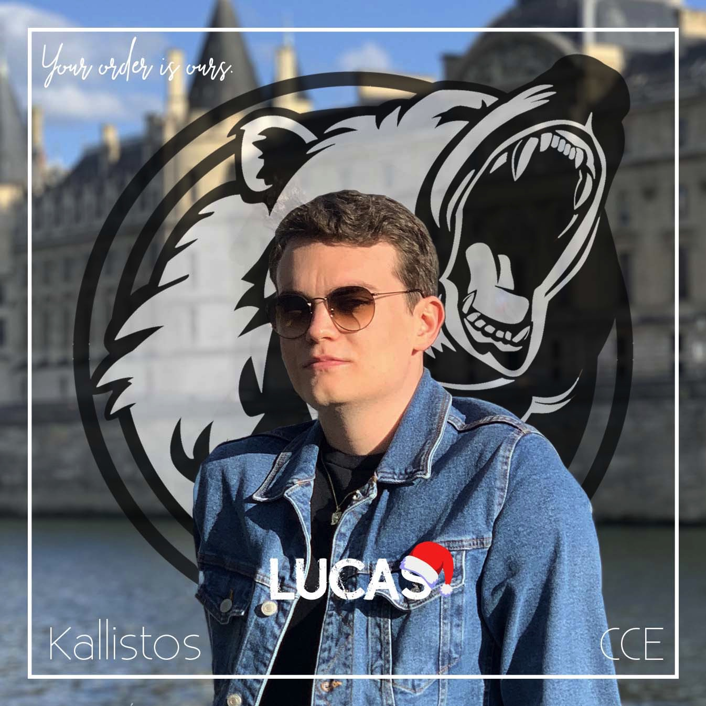

Lucas Mettoux
Après deux années à étudier les bases du Commerce International, j'ai pour ambition de développer mes compétences en marketing et plus particulièrement en marketing digital.
Découvrez Kedge BSMa formation
2020 - 2024 : Programme Grande École | Kedge Business School, Marseille 13009
2018 - 2020 : BTS Commerce International à Référentiel Commun Européen | Lycée Charles Péguy, 75011 Paris
2015 - 2018 : BAC Économique et Social avec Mention Assez Bien | Lycée Charles Péguy, 75011 Paris
Mes compétences
Marketing
- Réalisation d'études de marché : Recherches d'informations, Analyse, Synthèse sur un marché étranger ou des secteurs d'activités
- Campagne de prospection : réalisation d'une base de données exploitable, mailing, phoning...
Informatique
- Maîtrise du Pack Office (Word, Excel, PowerPoint, Access) + bases Wordpress, Google Analytics, iMovie
- Maîtrise des réseaux sociaux
- Notions de HTML/CSS
Négociation - Vente
- Techniques de négociation : stratégies de négociation, prise de contact, présentation d'une offre, conclusion d'une offre
- Maîtrise des outils de calcul : Diagnostic financier, CR, marge, marque, rentabilité, profitabilité
Gestion des opérations import-export
- Incoterms 2010 et 2020
- Cotations
- Assurance
- Techniques de paiement
- Gestion liasse documentaire
- Douane
Langues étrangères
- Anglais B2
- Espagnol B1
Mes expériences
Employé administratif
Lextenso - 1 Parvis de la Défense 92800 Puteaux | Juillet - Septembre 2020
- Ouvertures des commandes
- Dépôts des comptes / des actes des sociétés sur Infogreffe
- Archivage / Numérisation des documents
Stage au service des Crédits Documentaires
Crédit Agricole CIB - 83 boulevard des Chênes, 78280 Guyancourt | Janvier - Février 2020
- Découvertes des techniques de paiement à l'international (Crédits documentaires, Remises documentaires...)
- Vérification de crédits documentaires à l'export et à l'import
- Apprentissage des logiciels du groupe
Mission de prospection - vente à Madrid
Pour le compte de la marque Litote vendant des accessoires de mode | Octobre 2019
- Réalisation d'une étude de marché sur l'Espagne, Madrid et le secteur de l'habillement
- Création d'un argumentaire de vente et de supports de communication (PowerPoint, catalogues, cartes de visite)
- Réalisation d'une base de données exploitable avec de multiples prospects.
- Prospection mailing, phoning et négociation sur le terrain à Madrid.
- Suivi de prospection : réalisation d'un dossier récapitulatif sur les résultats obtenus.
Stage à l'étranger
ArtemisPlus et ses filiales aux Philippines - Avocado Rd, Manila, 1630 Metro Manila, Philippines | Mai - Juillet 2019
- Expérience de vente chez Les Néréides : Merchandising, Inventaire, Conseils clientèle, Brainstorming sur des améliorations au sein des boutiques aux Philippines
- Prospection commerciale chez d'ApolloPlus : Recherche de nouvelles cliniques partenaires (apolloplus.com.ph)
- Prospection et organisation d'évènements chez Kitchen City : Recherche de nouvelles entreprises partenaires et organisation d'un évènement pour la marque LandBank et Adidas (kitchencity.ph)
Stages Humanitaires
La Croix Rouge et Les Restaurants du Coeur | Décembre 2017
- Préparation de repas, des vêtements et des cadeaux aux familles dans le besoin
- Maraudes réalisées à Pantin au Pré-Saint-Gervais et à Aubervilliers